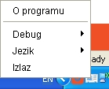

Pokretanje programa se vrši izvršenjem sledeće komande:
java -jar elksd-x.y.z-jar-with-dependencies.jar
Nakon pokretanja u donjem delu ekrana će se pojaviti odgovarajuća tray ikona:
Čitanje lične karte se pokreće automatski po stavljanju lične karte u čitač smart kartica. Nakon uspešnog čitanja, otvara se prozor na kojem su prikazani podaci iz lične karte.
Čitanje saobraćajne dozvole se, takođe, pokreće automatski po stavljanju saobraćajne dozvole u čitač smart kartica. Nakon uspešnog čitanja, otvara se prozor na kojem su prikazani podaci iz saobraćajne dozvole.
Desnim klikom miša na tray ikonu otvara se meni:
Izborom opcije Izlaz zaustavlja se izvršavanje programa.
Izborom opcije Jezik podešava se jezik prikaza. Podržani su sledeći jezici: engleski, srpski (latinica) i srpski (ćirilica).
Izborom opcije Debug podešava se količina poruka koje se ispisuju u log file. Opcija None isključuje logiranje u potpunosti, a opcija Debug daje najdetaljniji ispis u log fajl.